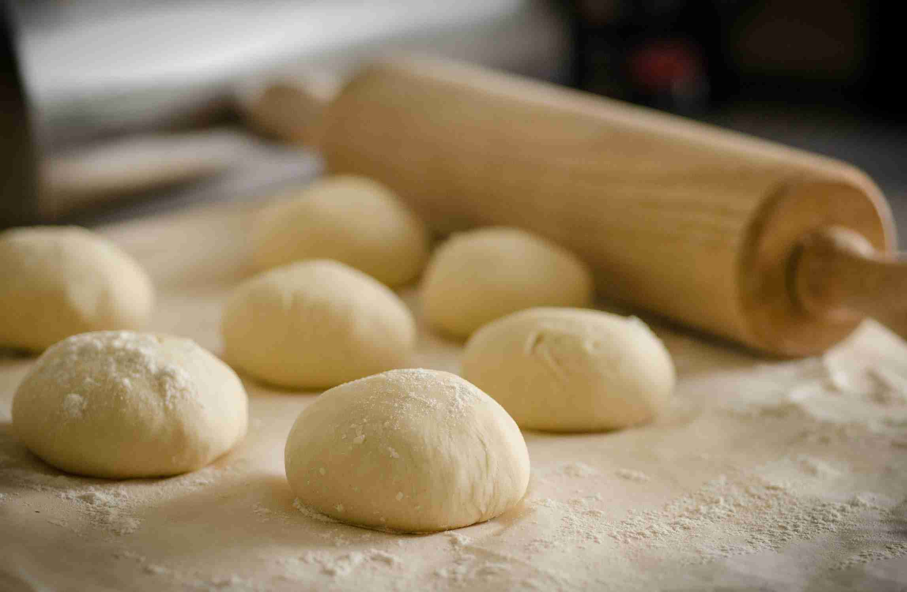
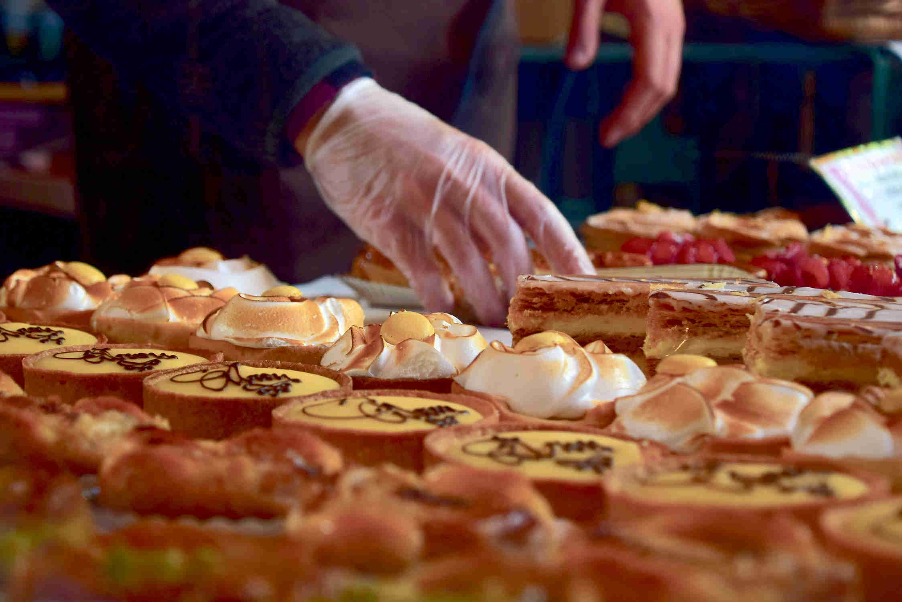
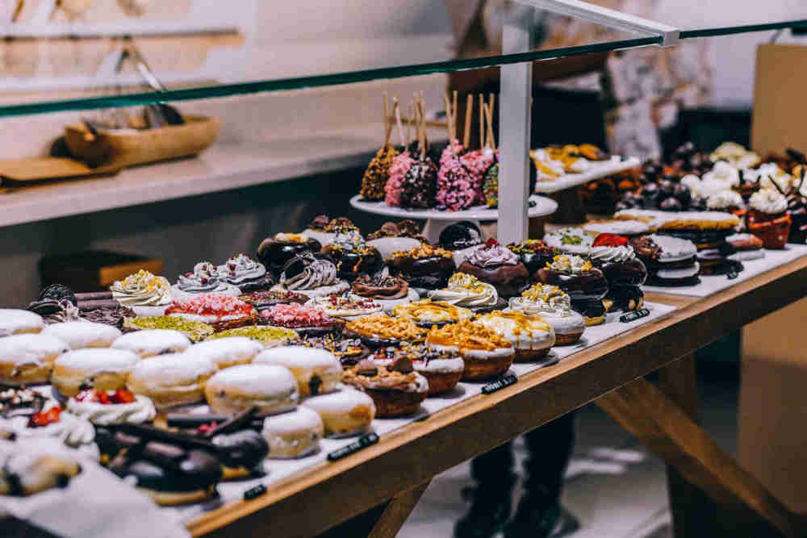

La storia della nostra pasticceria si sviluppa dagli albori dell’anno 1946, a quasi un anno dalla Liberazione del nazifascismo in Italia. Una data simbolica che segnò l’inizio della pace, della rinascita e della ricostruzione del territorio nazionale. Il fondatore, della quale si sa solo che si facesse chiamare “Maestro”, aveva un obiettivo chiaro e preciso: portare felicità e dolcezza nelle case di tutti. Fu così che iniziò la sua attività, inizialmente nata per distribuire croissant alla crema e bignè al cioccolato ad un costo accessibile per tutte le famiglie. La produzione si sviluppò inizialmente nella casa del “Maestro”, che si diceva preparasse tutti i dolciumi insieme a sua madre, dalla quale successivamente ereditò l’esperienza e, in particolar modo, le sue ricette. Ricette che tutt’ora rimangono segrete e che solo i dipendenti della nostra attività possono venirne a conoscenza.
L’attività di distribuzione dei dolciumi continuò per 6 anni abbondanti, fino a quando nel 1952 avvenne la svolta. Tutto nasce grazie ad un fratello della madre del “Maestro”, economicamente benestante: accorgendosi delle potenzialità della sua produzione di dolciumi, decise di regalare al “Maestro” un locale sfitto di sua proprietà, in Piazza dei Signori nel centro di Padova. Fu così che, dopo qualche mese di ristrutturazione, nacque il suo sogno sotto l’insegna di “Pasticceria Padovana”.
Da quel momento, il “Maestro” inizia a produrre e vendere i suoi prodotti direttamente nel locale, insieme ad un team di qualità ed esperienza. Locale che attualmente è situato nella stessa posizione, fermi nell’intenzione di continuare a scrivere la storia di “Pasticceria Padovana” nel luogo in qui tutto è nato. Del “Maestro” solo si sa che ha lasciato le redini della sua attività nel 1990, a causa della vecchiaia. Di lui si è cercato invano di scoprire la sua vera identità, ma è proprio per questo “velo di mistero” che la nostra pasticceria è diventata famosa (oltre alla qualità dei nostri prodotti) e alleggia ancora il suo nome come una sorta di divinità. Il resto è storia.
“Pasticceria Padovana” concorre ogni anno per il “Campionato Nazionale di Pasticceria” portando in concorso un pasticcere. Negli ultimi vent’anni ci siamo sempre posizionati nelle prime 3 posizioni, vincendo per ben 9 volte il titolo. Abbiamo partecipato anche nelle ultime 5 edizioni del “Campionato Mondiale di Pasticceria”, e nel 2018 siamo arrivati in quinta posizione. Un orgoglio per la nostra pasticceria, che ha raggiunto grandi traguardi, e per il nostro territorio che ci offre la miglior materia prima, sempre ed esclusivamente in nome del mitico “Maestro”.